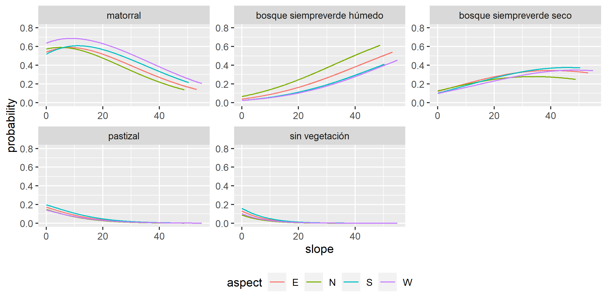

Influencia de la topografía en la distribución de las comunidades vegetales del Área Natural Protegida Sierra Fría en Aguascalientes, México.

1. Selección de imágenes
SENTINEL-2 lleva un instrumento óptico que muestrea 13 bandas espectrales: cuatro bandas a 10 m, seis bandas a 20 m y tres bandas a una resolución espacial de 60 m. La anchura de la franja orbital es de 290 km. Se obtuvo una escena nivel 1C con datos de reflectancia TOA con geometría geográfica. Los gránulos, también llamados teselas, son ortoimágenes de 110x110 km2 en proyección UTM/WGS84.
El instrumento multiespectral (MSI) utiliza un concepto de barrido de empuje. Un sensor de barrido funciona recopilando filas de datos de imágenes a lo largo de la franja orbital y utiliza el movimiento hacia adelante de la nave espacial a lo largo de la trayectoria de la órbita para proporcionar nuevas filas para la adquisición. La luz reflejada hasta el instrumento MSI desde la Tierra y su atmósfera es recogida por un telescopio de tres espejos (M1, M2 y M3) y enfocada, a través de un divisor de haz, en dos conjuntos de plano focal (FPA): uno para las diez longitudes de onda VNIR y otro para las tres longitudes de onda SWIR. En la Tabla 1 se muestra la descripción de las 13 bandas del sensor MSI.
Tabla 1. Descripción espectral y espacial de las bandas del MSI.
| Número de banda | Longitud de onda central (nm) | Ancho de banda (nm) | Resolución espacial (m) |
|---|---|---|---|
| 1 | 442.7 | 20 | 60 |
| 2 | 492.7 | 65 | 10 |
| 3 | 559.8 | 35 | 10 |
| 4 | 664.6 | 30 | 10 |
| 5 | 704.1 | 14 | 20 |
| 6 | 740.5 | 14 | 20 |
| 7 | 782.8 | 19 | 20 |
| 8 | 832.8 | 105 | 10 |
| 8a | 864.7 | 21 | 20 |
| 9 | 945.1 | 19 | 60 |
| 10 | 1,373.5 | 29 | 60 |
| 11 | 1,613.7 | 90 | 20 |
| 12 | 2,202.4 | 174 | 20 |
Escena descargada:
D:\Documents\GIS\IMG_SAT\S2A_MSIL1C_20230313T172111_N0509_R012_T13QGE_20230313T222343\
2. Preprocesamiento de imágenes: corrección atmosférica DOS
Polígono:
D:\Documents\GIS\IMG_SAT\S2A_MSIL1C_20230313T172111_N0509_R012_T13QGE_20230313T222343\ANPSF_2023_ZONA.shp
Salida:
D:\Documents\GIS\IMG_SAT\S2A_MSIL1C_20230313T172111_N0509_R012_T13QGE_20230313T222343\DOS_20230313\DOS_20230313
3. Preprocesamiento de imágenes: corrección topográfica por factor C
Se identificaron en el archivo de la imagen MSI los datos de valor medio del ángulo solar: ángulo cenital y ángulo azimutal (Tabla 2).
Tabla 2. Valores de orientación solar de la escena del MSI.
| Ángulo cenital (°) | Ángulo azimutal (°) |
|---|---|
| 31.9443 | 138.7315 |
El valor del ángulo cenital se utilizó para obtener el ángulo de elevación solar como se indica a continuación:
sh = 90 - ca
donde:
sh: es el valor del ángulo de elevación solar.
ca: es el valor del ángulo cenital
Entonces, los valores de ángulo solar ingresados en SAGA para realizar la corrección de iluminación fueron el ángulo azimutal y el ángulo de elevación solar.
Finalmente, se ingresaron en SAGA los parámetros de corrección complementarios que se muestran en la Tabla 3.
Tabla 3. Parámetros para la corrección de iluminación por factor C.
| Banda | Max cells | Minnaert |
|---|---|---|
| 3 | 49 | 0.5 |
| 4 | 49 | 0.5 |
| 8 | 225 | 0.5 |
| 11 | 25 | 0.5 |
Como resultado se obtuvo una imagen mejorada con mayor contraste entre las coberturas presentes en la escena como se muestra en la Figura 1.

Figura 1. (A) Imagen sin corrección de iluminación; (B) Imagen con iluminación corregida por método de factor C.
Datos de elevación:
D:\Documents\GIS\AGS_ANPSF\ANPSF_2023\MED_20230313_ANPSF.tif
Salida:
D:\Documents\GIS\IMG_SAT\S2A_MSIL1C_20230313T172111_N0509_R012_T13QGE_20230313T222343\C3_20230313\C_20230313_B0stack_raster.tif
4. Procesamiento de imágenes: creación de un índice de vigor vegetal (IVV)
((b4 - b3) ^b5) / ((b4 + b3) / b5)
Salida:
D:\Documents\GIS\IMG_SAT\S2A_MSIL1C_20230313T172111_N0509_R012_T13QGE_20230313T222343\INDEX VVI
5. Clasificación por conglomerados
Número de clases: 7
Iteraciones: 50
Desviaciones desde la media: 7
Máxima distancia del error: 0.5
Clasificación por conglomerados k-means
Una vez concluidas las 50 iteraciones de la clasificación sobre el índice de verdor y vigor, se obtuvo la imagen IVV con 7 clases incluyendo otra mas con datos NO clasificados para un total de 8 clases. Se cargaron las ROI sobre la imagen MSI y se analizó la separabilidad de las ROI. Se hizo la unión de las ROI 1 y 2, 5 y 6, y el resultado de ésta última unión se fusionó con la ROI 7. La separabilidad de los pares de ROI se muestra en la Tabla 6.Tabla 6. Valores de menor separabilidad entre pares de ROI de acuerdo a los valores de las bandas MSI para cada una de las clases de la imagen IVV.
| ROI ID | ROI ID | Separación |
|---|---|---|
| 1 | 2 | 1.2882 |
| 5 | 6 | 1.3228 |
| 6 | 7 | 1.1829 |
Es notable que la clasificación realizada sobre los datos del índice de vegetación y verdor muestran mayor ruido que se expresa como una mayor fragmentación en la distribución espacial de los pixeles clasificados.
Tabla 7. Valor medio de clase y desviación estándar para cada una de las bandas del sensor MSI de acuerdo a las clases de la imagen IVV.
| Clase | Banda 3 media-desv | Banda 4 media-desv | Banda 8 media-desv | Banda 11 media-desv | ||||
|---|---|---|---|---|---|---|---|---|
| Clase 1 | 0.2035 | 0.0258 | 0.2232 | 0.0360 | 0.2964 | 0.0359 | 0.3677 | 0.0600 |
| Clase 2 | 0.2078 | 0.0100 | 0.2297 | 0.0116 | 0.3003 | 0.0212 | 0.3882 | 0.0323 |
| Clase 3 | 0.1948 | 0.0085 | 0.2120 | 0.0091 | 0.2838 | 0.0185 | 0.3587 | 0.0277 |
| Clase 4 | 0.1791 | 0.0060 | 0.1816 | 0.0100 | 0.2713 | 0.0188 | 0.2965 | 0.0279 |
Si bien se presenta nuevamente un aumento en la diferencia entre los valores medios de las bandas 8 y 4, y también se observa la disminución en los valores medios de la banda 11 a través de las clases obtenidas, el comportamiento es menos consistente que lo observado anteriormente con los datos de la clasificación sobre la imagen ACP (Figura 2).

Fig 2. Resultados de la clasificación kmeans. Del lado izquierdo se muestra una composición de imagen multiespectral del sensor MSI y del lado derecho se muestra la imagen clasificada a partir de los valres del índice IVV.
Para ambos procesos de clasificación, al final se obtuvo una imagen raster con 4 clases cuya descripción se muestran en la Tabla 8. Las cuatro clases obtenidas representan 5 categorías de cobertura vegetal en función del verdor y del contenido de humedad, aspectos que se expresan a través de las bandas 4, 8 y 11.
Tabla 8. Descripción de las clases obtenidas por medio de la clasificación k-means.
| Clase | Nivel | Descripción |
|---|---|---|
| 1 | 2 | Sin vegetación |
| 2 | 3 | Pastizal |
| 3 | 5 | Matorral senescente |
| 4 | 7 | Bosque perenifolio seco |
| 4 | 7 | Bosque perenifolio húmedo |
Se generaron Regiones de Interés (ROI) para exportarlas como imágenes clasificadas y posteriormente a formato TIFF para su análisis en R.
Salida:
D:\Documents\GIS\IMG_SAT\S2A_MSIL1C_20230313T172111_N0509_R012_T13QGE_20230313T222343\CLASSIFY_LANDCOVER\kmeans pca.hdr
D:\Documents\GIS\IMG_SAT\S2A_MSIL1C_20230313T172111_N0509_R012_T13QGE_20230313T222343\CLASSIFY_LANDCOVER\kmeans ivv.hdr
D:\Documents\GIS\IMG_SAT\S2A_MSIL1C_20230313T172111_N0509_R012_T13QGE_20230313T222343\CLASSIFY_LANDCOVER\roi pca.roi
D:\Documents\GIS\IMG_SAT\S2A_MSIL1C_20230313T172111_N0509_R012_T13QGE_20230313T222343\CLASSIFY_LANDCOVER\roi pca union.roi
D:\Documents\GIS\IMG_SAT\S2A_MSIL1C_20230313T172111_N0509_R012_T13QGE_20230313T222343\CLASSIFY_LANDCOVER\roi ivv.roi
D:\Documents\GIS\IMG_SAT\S2A_MSIL1C_20230313T172111_N0509_R012_T13QGE_20230313T222343\CLASSIFY_LANDCOVER\roi ivv union.roi
D:\Documents\GIS\IMG_SAT\S2A_MSIL1C_20230313T172111_N0509_R012_T13QGE_20230313T222343\CLASSIFY_LANDCOVER\roi pca to tif.tif
D:\Documents\GIS\IMG_SAT\S2A_MSIL1C_20230313T172111_N0509_R012_T13QGE_20230313T222343\CLASSIFY_LANDCOVER\roi ivv to tif.tif
6. Análisis de regresión
Regresión logística multinomial
El análisis de regresión logística multinomial trabaja sobre una variable respuesta o dependiente de naturaleza categórica y, para este caso, con dos variabes predictivas: una continua (pendiente) y otra categórica (aspecto). La variable aspecto se particionó en 4 categorías: Norte, Sur, Este y Oeste. El análisis busca detectar si es que existe alguna influencia significativa de las variables topográficas sobre la distribución de las clases de vegetación.
Tabla 10. Resultados del modelo de regresión logística.
Coeficientes.
| Clase | Intercept | N | S | W | Slope |
|---|---|---|---|---|---|
| Bosque ph | -0.9298 | 0.2641 | -0.1475 | -0.3357 | 0.0449 |
| Bosque ps | -0.6269 | -0.0893 | 0.1797 | -0.0340 | -0.0531 |
| Pastizal | -0.2078 | -0.2622 | 0.2612 | -0.4017 | -0.1057 |
| SN | -0.2078 | -0.2622 | 0.2612 | -0.4017 | -0.1057 |
| Clase | Intercept | N | S | W | Slope |
|---|---|---|---|---|---|
| Bosque ph | 0.0077 | 0.0094 | 0.0090 | 0.0098 | 0.0003 |
| Bosque ps | 0.0097 | 0.0134 | 0.0112 | 0.0127 | 0.0006 |
| Pastizal | 0.0100 | 0.0142 | 0.0112 | 0.0143 | 0.0007 |
| SN | 0.0100 | 0.0142 | 0.0112 | 0.0143 | 0.0007 |
Valores exponenciales de los odds: probabilidad de ocurrencia
| Clase | Intercept | N | S | W | Slope |
|---|---|---|---|---|---|
| Bosque ph | 0.3946 | 1.3023 | 0.8627 | 0.7148 | 1.0460 |
| Bosque ps | 0.5342 | 0.9144 | 1.1969 | 0.9664 | 0.9482 |
| Pastizal | 0.8123 | 0.7693 | 1.2985 | 0.6691 | 0.8996 |
| SN | 0.8123 | 0.7693 | 1.2985 | 0.6691 | 0.8996 |
En la Figura 4 se puede observar que la probabilidad de ocurrencia del bosque perenifolio húmedo se ve influenciada por el aumento en los valores de la pendiente y es ligeramente superior en orientación Norte. La vegetación de matorral presenta probabilidades de ocurrencia constantes en un rango amplio de valores de pendiente y ligeramente superior para aquellas superficies de terreno con orientación Oeste. En el caso del pastizal y de las zonas sin vegetación se observa un máximo en el valor de las probabilidades de ocurrecnia cuando los valores de la pendiente son mínimos.

Fig 4. Probabilidades de ocurrencia de las diferentes clases de vegetación para diferentes valores de la pendiente y en las diferentes orientaciones del terreno..
Regresión lineal múltiple
Se desarrolló un modelo de regresión múltiple donde la variable respuesta es continua a partir de la información del índice de vigor vegetal (ivv). Del mismo modo se usaron dos variables predictivas continuas: pendiente (slope) y aspecto del terreno. En la Figura 5 se muestra la superficie de respuesta para el modelo de regresión lineal múltiple:
ivv ~ slope + aspect + (slope * aspect).
Donde:
ivv: es la variable respuesta como el índice de vigor vegetal.
slope: es el porcentaje de pendiente del terreno.
aspect: es la orientación del terreno.
Fig 5. Gráfica interactiva. Superficie de respuesta de la regresión lineal múltiple. El eje x representa los valores de la pendiente; el eje y representa los valores de aspecto donde 0 indica la orientación Norte y 180 la orientación Sur.
Referencias:
https://stats.oarc.ucla.edu/r/dae/multinomial-logistic-regression/
https://stats.oarc.ucla.edu/other/examples/icda/
https://www.ibm.com/docs/es/spss-statistics/saas?topic=regression-multinomial-logistic
7. Análisis y discusión de resultados
estamos trabajando.